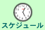
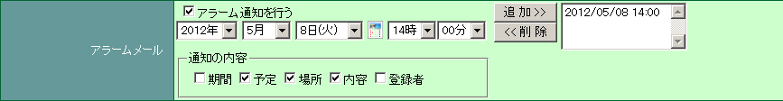
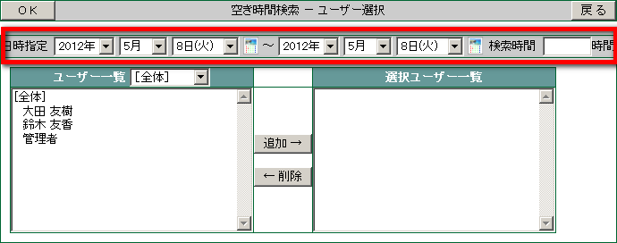
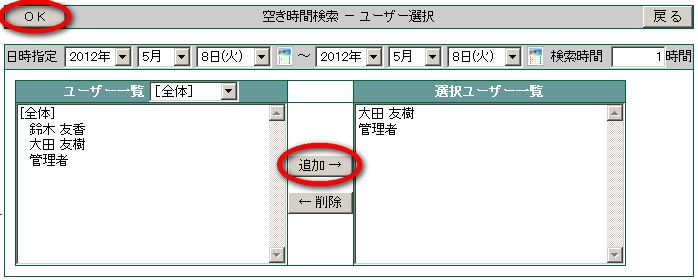
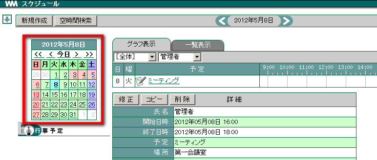
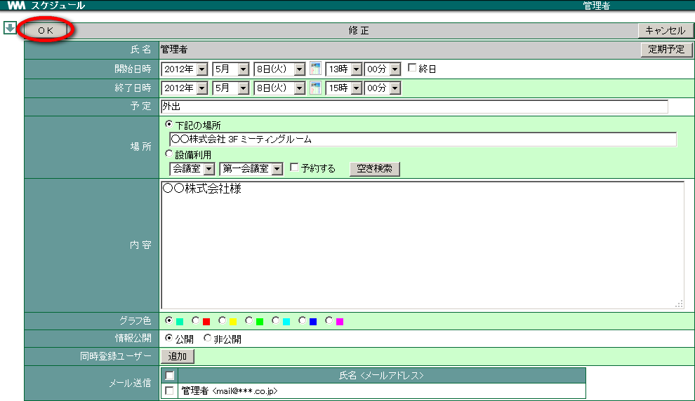

4. スケジュール¶
4.1. スケジュールを登録する¶
メニューの  をクリックします。
新規作成 をクリックします。

日時・予定・内容 を入力します。

来客予定を登録します。新規作成画面の一番下「予定登録」 ▼ をクリックし、「 する 」を選択します。
画面が切り替わりますので、来客予定者の登録を行います。

OK をクリックします。

4.1.2. スケジュールを公開しない¶
個人のスケジュールは他人も参照することができるため、他人に知られたくないスケジュール内容の場合、スケジュールを登録する画面で [情報公開] を 非公開 に設定しておきます。

4.1.3. 予定日時の前に自分宛にメールで知らせる¶


4.1.5. 登録したスケジュールをメールで確認する¶
スケジュール登録画面の [メール送信] で メールを送信する にチェックを入れます。
4.1.6. 空き時間を検索してスケジュールを登録する¶
メニューの をクリックします。
空時間検索 をクリックします。

日付、時間帯を入力します。

[ユーザー一覧] からスケジュールを登録したいユーザー名を選択して 追加→ をクリックします。
OK をクリックします。

共通の空き時間帯に横棒グラフが表示されます。スケジュールを登録したい時間帯の上でクリックします。

各項目を設定し、 OK をクリックします。

共通のスケジュールが一度に登録されます。

4.1.7. 定期的なスケジュールを登録する¶
「毎月10日」「毎週水曜日」など、定期的なスケジュールを一度に登録することができます。
メニューの をクリックします。
新規作成 をクリックします。
定期予定 をクリックします。

各項目を選択・入力し OK をクリックします。

4.2. スケジュールを確認する¶
メニューの をクリックします。
カレンダーのスケジュールで確認したい日をクリックします。

[グラフ表示] の場合は確認したいスケジュールの横棒グラフでクリックします。

[一覧表示] の場合は確認したいスケジュールの「件名」上でクリックします。

スケジュールの詳細が表示されます。


4.2.2. グループ表示する¶

4.2.4. ユーザーを検索する¶
検索したいキーワードを入力し、 検索 をクリックします。

入力したキーワードに該当するユーザーのスケジュールが表示されます。

クリア をクリックすると、検索による絞り込みが解除されます。
4.3. スケジュールを修正する¶
登録したスケジュールは後から修正できます。スケジュールを修正できるのはスケジュールを登録したユーザーのみです。 [4]
メニューの をクリックします。
変更したいスケジュールをクリックし、詳細画面の 修正 をクリックします。

内容を変更し OK をクリックします。

4.4. スケジュールを削除する¶
スケジュールを削除しましょう。スケジュールを削除できるのはスケジュールを登録したユーザーのみです。 [5]
メニューの をクリックします。
削除したいスケジュールをクリックし、詳細画面の 削除 をクリックします。

確認メッセージが表示されたら OK をクリックします。
4.5. スケジュールをエクスポートする¶
スケジュールを CSV ファイルに書き出すことができます。
4.6. スケジュールをインポートする¶
表計算ソフト等で編集した CSV ファイルを取り込むことができます。 [8]
メニューの をクリックします。
右上のプルダウンメニューから インポート を選択します。

参照 をクリックし、取り込む CSV ファイルを選択します。
OK をクリックします。 [9]

スケジュールがインポートされていることを確認します。
4.6.1. CSV ファイルの書き方¶
CSV ファイルを記載する場合は、一度エクスポートを実行した CSV ファイル (sche_export.csv) をご参照ください。
| インポートに必要なヘッダーの説明 | ||
|---|---|---|
| username | ログイン ID | WebMagic にログインする際に使用する ID |
| name | 氏名 | |
| sche_start | 開始日時 | 「西暦/月/日 時:分」まで入力(半角) |
| sche_end | 終了日時 | 「西暦/月/日 時:分」まで入力(半角) |
| plan | 予定 | |
| place | 場所 | |
| content | 内容 | |
| open | 情報公開 | スケジュールを公開するか否かのチェック(半角数字)
「0」が非公開, 「1」が公開
|
| grph_color | グラフ色 | グラフの色(半角数字) |
| edit_datetime | 登録日(スケジュール入力日時) | 「西暦/月/日 時:分」まで入力(半角) |
| edit_user_id | 登録ユーザー ID | WebMagic にログインする際に使用する ID |
| edit_username | 登録者氏名 | |
| pattern | 登録パターン | パターンの説明 を参照 |
| pattern_parm | 登録パラメータ | パターンの説明 を参照 |
| exception_date | 例外日 | 「西暦/月/日」を入力
複数ある場合は「,」で区切る(半角)
|
Warning
日本語のヘッダー文字が含まれた CSV データはインポートできません。
脚注
| [1] | [設備予約] へ登録されます。 |
| [2] | 設備利用の 空き検索 をクリックすると指定した日時で空いている会議室が抽出されます。 |
| [3] | 送信先のメールアドレス設定は、設定画面 をご覧ください。 |
| [4] | 「作成」権限を持つユーザー、管理者でも直接修正することはできません。 |
| [5] | 「作成」権限を持つユーザー、管理者でも直接削除することはできません。 |
| [6] | 「ヘッダ文字を日本語にする」にチェックを入れると、書き出される項目名を日本語で表示することができます。 |
| [7] | 他人のスケジュールをエクスポートするためには「詳細参照」または「作成」権限が必要です。 |
| [8] | 他人のスケジュールへインポートするためには「作成」権限が必要です。 |
| [9] | [オプション] の [テストを行う] にチェックをつけて OK ボタンをクリックすると、CSVファイルのテストを行うことができます。(チェックがつけられている場合は、データ登録はされません) |